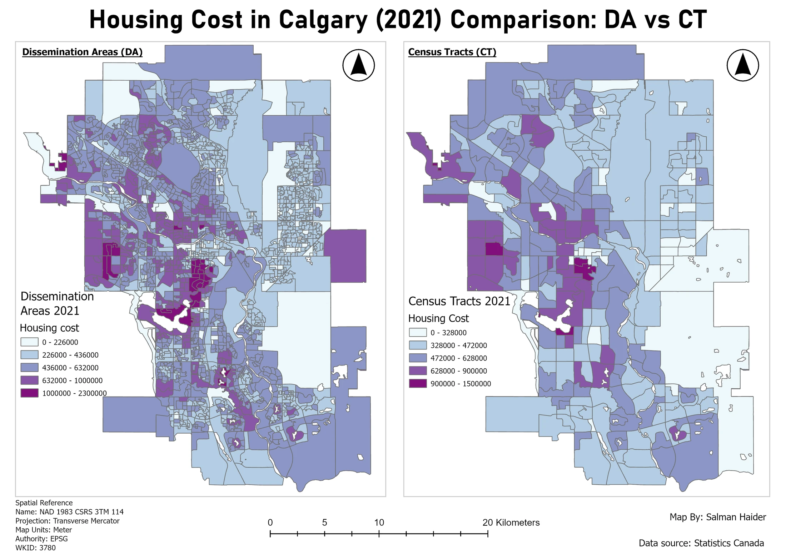
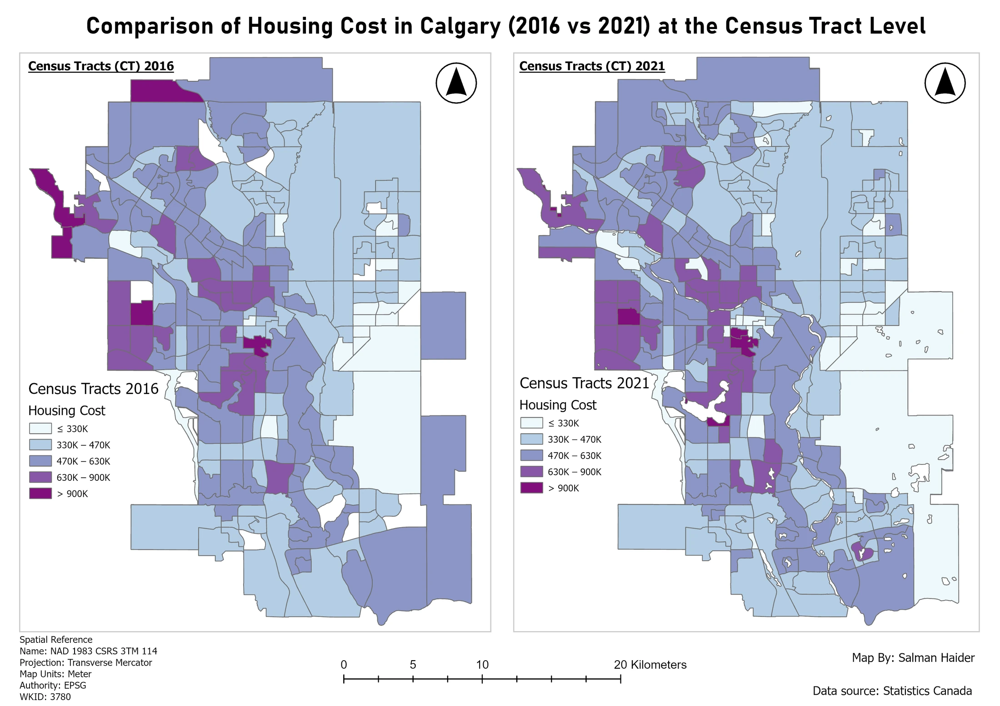
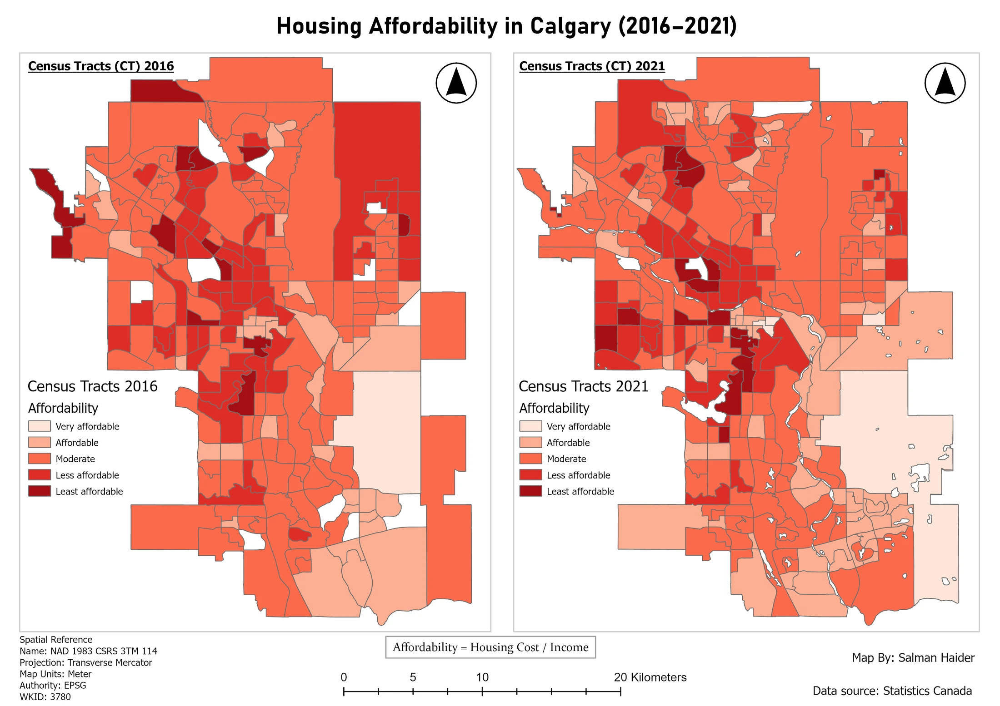

Spatial analysis
Calgary housing patterns
I wanted to see how housing costs varied across Calgary, how the pattern changed between 2016 and 2021, and what happened when I compared cost with income. I also mapped the same year at two census scales to see how much local detail was lost in the larger areas.
I made three comparisons: dissemination areas versus census tracts, housing cost across the two years, and housing cost relative to income. Together they give someone examining housing a better starting point than a single citywide figure.
- Study area
- Calgary, Alberta
- Census years
- 2016 and 2021
- Geographies
- Dissemination areas and census tracts
- Tools
- ArcGIS Pro, Table joins, Natural Breaks classification, Field Calculator
Dissemination areas and census tracts


The smaller dissemination areas show local variation that becomes less distinct at the census tract scale. Class breaks were calculated separately, so each panel has its own legend ranges.
Inspect details: Dissemination areas and census tractsWhat changes when the areas get larger?
I joined Statistics Canada housing tables to the matching census boundaries and clipped them to Calgary. The 2021 dissemination area map reveals small pockets of different values within areas that look more uniform at the census tract scale. That distinction matters when the question concerns a particular neighbourhood.
The distributions were positively skewed, so I used Natural Breaks separately for each geography. This showed clusters within each dataset, but produced different class ranges. A purple shade in the first panel must be read against its own legend before comparing it with the second.
Comparing the two census years
For the 2016 and 2021 maps, I set matching class breaks so the colours kept the same meaning. In my comparison, more tracts appeared in higher cost classes in 2021. Central and southwestern areas remained expensive, while some northwestern areas moved into lower classes.
That apparent improvement in the northwest needed care. Census tract boundaries changed between the two years, so some of the difference may come from the areas being grouped differently. I retained each year's geography and read the maps as two distributions, rather than a measure of price change within identical boundaries.
Housing cost in 2016 and 2021


Matching class ranges show the persistence of higher cost areas in central and southwestern Calgary. Boundary changes between census years also affect the comparison.
Inspect details: Housing cost in 2016 and 2021Adding income to the comparison
I divided the supplied median housing cost by median total income. Central and western areas generally had higher ratios in both years. The southeast and parts of the northeast more often fell into lower ratio classes. This helps locate contrasts that a cost map alone would miss.
A housing or planning reader could use these patterns to choose areas for a closer look. The ratio compares area summaries; it does not measure an individual household's monthly housing burden. I also checked zero or blank areas against imagery and found parks, industrial land and the airport among them. Missing or suppressed records can create gaps too, so those areas should not be treated as cheap housing.
Housing cost relative to income


Higher ratios are shown in darker red. Central and western areas stand out in both years, while parts of the outer east have lower ratios. These are relative classes, not official household affordability thresholds.
Inspect details: Housing cost relative to incomeData and references
- Statistics Canada, 2016 and 2021 census tables and boundaries